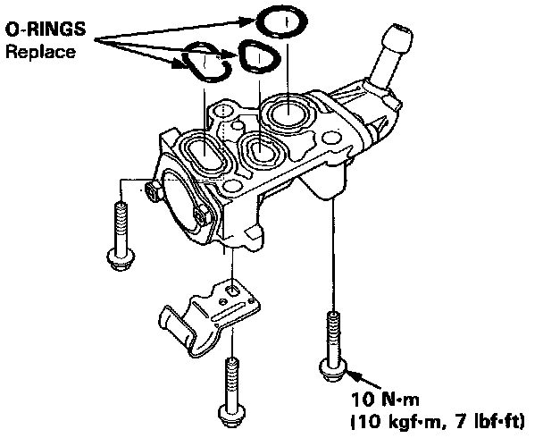

Auxiliary Air Valve (Idle Speed): Service and Repair
WARNING: Make sure engine is cool before removing the Fast Idle Thermo Valve as it is heated with engine coolant and may cause burns.Fast Idle Thermo Valve O-ring Placement:

1. Remove air intake tube.
2. Remove the coolant hoses from the Fast Idle Valve.
3. Remove the three (3) mounting bolts.
4. Remove the Fast Idle Valve and clean all mating surfaces.
5. Install new O-rings on the valve.
6. Reinstall the Fast Idle Valve and torque the three (3) mounting bolts to:
12 Nm (9 lb.ft)
7. Reinstall the coolant hoses.
8. Check coolant level and add if necessary.
8. Check for proper operation.